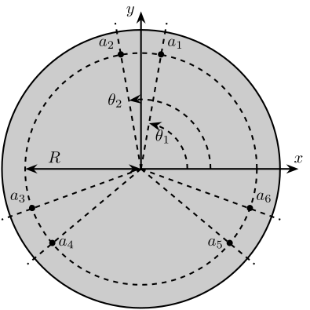
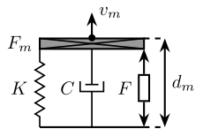
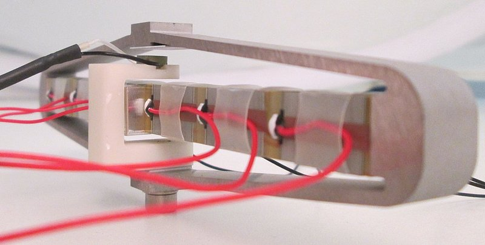
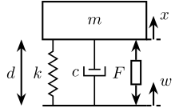

Stewart Platform - Definition of the Architecture
Table of Contents
- 1. Definition of the Stewart Platform Geometry
- 2. Definition of the Inertia and geometry of the Fixed base, Mobile platform and Struts
- 3. Definition of the stiffness and damping of the joints
- 4. Summary of the Initialization Procedure and Matlab Example
- 5. Functions
- 5.1.
initializeStewartPlatform: Initialize the Stewart Platform structure - 5.2.
initializeFramesPositions: Initialize the positions of frames {A}, {B}, {F} and {M} - 5.3.
generateGeneralConfiguration: Generate a Very General Configuration - 5.4.
computeJointsPose: Compute the Pose of the Joints - 5.5.
initializeStewartPose: Determine the initial stroke in each leg to have the wanted pose - 5.6.
initializeCylindricalPlatforms: Initialize the geometry of the Fixed and Mobile Platforms - 5.7.
initializeCylindricalStruts: Define the inertia of cylindrical struts - 5.8.
initializeStrutDynamics: Add Stiffness and Damping properties of each strut - 5.9.
initializeAmplifiedStrutDynamics: Add Stiffness and Damping properties of each strut for an amplified piezoelectric actuator - 5.10.
initializeJointDynamics: Add Stiffness and Damping properties for spherical joints - 5.11.
initializeInertialSensor: Initialize the inertial sensor in each strut - 5.12.
displayArchitecture: 3D plot of the Stewart platform architecture
- 5.1.
In this document is explained how the Stewart Platform architecture is defined.
Some efforts has been made such that the procedure for the definition of the Stewart Platform architecture is as logical and clear as possible.
When possible, the notations are compatible with the one used in taghirad13_paral.
The definition of the Stewart platform is done in three main parts:
- First, the geometry if defined (Section 1)
- Then, the inertia of the mechanical elements are defined (Section 2)
- Finally, the Stiffness and Damping characteristics of the elements are defined (Section 3)
In section 4, the procedure the initialize the Stewart platform is summarize and the associated Matlab code is shown.
Finally, all the Matlab function used to initialize the Stewart platform are described in section 5.
1 Definition of the Stewart Platform Geometry
Stewart platforms are generated in multiple steps:
- Definition of the frames
- Definition of the location of the joints
- Computation of the length and orientation of the struts
- Choice of the rest position of the mobile platform
This steps are detailed below.
1.1 Frames Definition
We define 4 important frames (see Figure 1):
- \(\{F\}\): Frame fixed to the Fixed base and located at the center of its bottom surface. This is used to fix the Stewart platform to some support.
- \(\{M\}\): Frame fixed to the Moving platform and located at the center of its top surface. This is used to place things on top of the Stewart platform.
- \(\{A\}\): Frame fixed to the fixed base.
- \(\{B\}\): Frame fixed to the moving platform.
Even though frames \(\{A\}\) and \(\{B\}\) don’t usually correspond to physical elements, they are of primary importance. Firstly, they are used for the definition of the motion of the Mobile platform with respect to the fixed frame:
- In position: \({}^A\bm{P}_{B}\) (read: Position of frame \(\{B\}\) expressed in frame \(\{A\}\))
- In rotation: \({}^A\bm{R}_{B}\) (read: The rotation matrix that express the orientation of frame \(\{B\}\) expressed in frame \(\{A\}\))
The frames \(\{A\}\) and \(\{B\}\) are used for all the kinematic analysis (Jacobian, Stiffness matrix, …).
Typical choice of \(\{A\}\) and \(\{B\}\) are:
- Center of mass of the payload
- Location where external forces are applied to the mobile platform (for instance when the mobile platform is in contact with a stiff environment)
- Center of the cube for the cubic configuration
The definition of the frames is done with the initializeFramesPositions function (link);

Figure 1: Definition of the Frames for the Stewart Platform
1.2 Location of the Spherical Joints
Then, we define the location of the spherical joints (see Figure 2):
- \(\bm{a}_{i}\) are the position of the spherical joints fixed to the fixed base
- \(\bm{b}_{i}\) are the position of the spherical joints fixed to the moving platform
The location of the joints will define the Geometry of the Stewart platform. Many characteristics of the platform depend on the location of the joints.
The location of the joints can be set to arbitrary positions or it can be computed to obtain specific configurations such as:
- A cubic configuration: function
generateCubicConfiguration(described in this file) - A symmetrical configuration
A function (generateGeneralConfiguration) to set the position of the joints on a circle is described here.
The location of the spherical joints are then given by \({}^{F}\bm{a}_{i}\) and \({}^{M}\bm{b}_{i}\).

Figure 2: Position of the Spherical/Universal joints for the Stewart Platform
1.3 Length and orientation of the struts
From the location of the joints (\({}^{F}\bm{a}_{i}\) and \({}^{M}\bm{b}_{i}\)), we compute the length \(l_i\) and orientation of each strut \(\hat{\bm{s}}_i\) (unit vector aligned with the strut). The length and orientation of each strut is represented in figure 3.
This is done with the computeJointsPose function (link).

Figure 3: Length \(l_i\) and orientation \(\hat{\bm{s}}_i\) of the Stewart platform struts
1.4 Rest Position of the Stewart platform
We may want to initialize the Stewart platform in some position and orientation that corresponds to its rest position.
To do so, we choose:
- the position of \(\bm{O}_B\) expressed in \(\{A\}\) using \({}^A\bm{P}\)
- the orientation of \(\{B\}\) expressed in \(\{A\}\) using a rotation matrix \({}^{A}\bm{R}_{B}\)
Then, the function initializeStewartPose (link) compute the corresponding initial and rest position of each of the strut.
2 Definition of the Inertia and geometry of the Fixed base, Mobile platform and Struts
Now that the geometry of the Stewart platform has been defined, we have to choose the inertia of:
- The Fixed base
- The Mobile platform
- The two parts of the struts
The inertia of these elements will modify the dynamics of the systems. It is thus important to set them properly.
2.1 Inertia and Geometry of the Fixed and Mobile platforms
In order to set the inertia of the fixed and mobile platforms, we can use the following function that assume that both platforms are cylindrical:
initializeCylindricalPlatforms(link): by choosing the height, radius and mass of the platforms, it computes the inertia matrix that will be used for simulation
2.2 Inertia and Geometry of the struts
Similarly for the struts, we suppose here that they have a cylindrical shape. They are initialize with the following function:
initializeCylindricalStruts(link): the two parts of each strut are supposed to by cylindrical. We can set the mass and geometry of both strut parts.
3 Definition of the stiffness and damping of the joints
The global stiffness and damping of the Stewart platform depends on its geometry but also on the stiffness and damping of:
- the actuator because of the finite stiffness of the actuator / linear guide
- the spherical joints
3.1 Stiffness and Damping of the Actuator
Each Actuator is modeled by 3 elements in parallel (Figure 4):
- A spring with a stiffness \(k_{i}\)
- A dashpot with a damping \(c_{i}\)
- An ideal force actuator generating a force \(\tau_i\)
Figure 4: Model of the Stewart platform actuator
The initialization of the stiffness and damping properties of the actuators is done with the initializeStrutDynamics (link).
3.2 Stiffness and Damping of the Spherical Joints
Even though we often suppose that the spherical joint are perfect in the sense that we neglect its stiffness and damping, we can set some rotation stiffness and damping of each of the spherical/universal joints.
This is done with the initializeJointDynamics function (link).
4 Summary of the Initialization Procedure and Matlab Example
The procedure to define the Stewart platform is the following:
- Define the initial position of frames \(\{A\}\), \(\{B\}\), \(\{F\}\) and \(\{M\}\).
We do that using the
initializeFramesPositionsfunction. We have to specify the total height of the Stewart platform \(H\) and the position \({}^{M}\bm{O}_{B}\) of \(\{B\}\) with respect to \(\{M\}\). - Compute the positions of joints \({}^{F}\bm{a}_{i}\) and \({}^{M}\bm{b}_{i}\).
We can do that using various methods depending on the wanted architecture:
generateCubicConfigurationpermits to generate a cubic configuration
- Compute the position and orientation of the joints with respect to the fixed base and the moving platform.
This is done with the
computeJointsPosefunction. If wanted, compute the rest position of each strut to have the wanted pose of the mobile platform with the functioninitializeStewartPose. - Define the mass and inertia of each element of the Stewart platform with the
initializeCylindricalPlatformsandinitializeCylindricalStruts - Define the dynamical properties of the Stewart platform by setting the stiffness and damping of the actuators and joints.
By following this procedure, we obtain a Matlab structure stewart that contains all the information for the Simscape model and for further analysis.
4.1 Example of the initialization of a Stewart Platform
Let’s first define the Stewart Platform Geometry.
stewart = initializeStewartPlatform(); stewart = initializeFramesPositions(stewart, 'H', 90e-3, 'MO_B', 45e-3); stewart = generateGeneralConfiguration(stewart); stewart = computeJointsPose(stewart); stewart = initializeStewartPose(stewart, 'AP', [0;0;0], 'ARB', eye(3));
Then, define the inertia and geometry of the fixed base, mobile platform and struts.
stewart = initializeCylindricalPlatforms(stewart); stewart = initializeCylindricalStruts(stewart);
We initialize the strut stiffness and damping properties.
stewart = initializeStrutDynamics(stewart, 'K', 1e6*ones(6,1), 'C', 1e2*ones(6,1)); stewart = initializeAmplifiedStrutDynamics(stewart); stewart = initializeJointDynamics(stewart);
And finally the inertial sensors included in each strut.
stewart = initializeInertialSensor(stewart, 'type', 'none');
The obtained stewart Matlab structure contains all the information for analysis of the Stewart platform and for simulations using Simscape.
The function displayArchitecture can be used to display the current Stewart configuration:
displayArchitecture(stewart, 'views', 'all');

There are many options to show or hides elements such as labels and frames. The documentation of the function is available here.
Let’s now move a little bit the top platform and re-display the configuration:
tx = 0.1; % [rad] ty = 0.2; % [rad] tz = 0.05; % [rad] Rx = [1 0 0; 0 cos(tx) -sin(tx); 0 sin(tx) cos(tx)]; Ry = [ cos(ty) 0 sin(ty); 0 1 0; -sin(ty) 0 cos(ty)]; Rz = [cos(tz) -sin(tz) 0; sin(tz) cos(tz) 0; 0 0 1]; ARB = Rz*Ry*Rx; AP = [0.08; 0; 0]; % [m] displayArchitecture(stewart, 'AP', AP, 'ARB', ARB); view([0 -1 0]);

{kind=link}
{kind=link}
5 Functions
5.1 initializeStewartPlatform: Initialize the Stewart Platform structure
This Matlab function is accessible here.
Documentation

Figure 7: Definition of the position of the frames
Function description
function [stewart] = initializeStewartPlatform() % initializeStewartPlatform - Initialize the stewart structure % % Syntax: [stewart] = initializeStewartPlatform(args) % % Outputs: % - stewart - A structure with the following sub-structures: % - platform_F - % - platform_M - % - joints_F - % - joints_M - % - struts_F - % - struts_M - % - actuators - % - geometry - % - properties -
Initialize the Stewart structure
stewart = struct(); stewart.platform_F = struct(); stewart.platform_M = struct(); stewart.joints_F = struct(); stewart.joints_M = struct(); stewart.struts_F = struct(); stewart.struts_M = struct(); stewart.actuators = struct(); stewart.sensors = struct(); stewart.sensors.inertial = struct(); stewart.sensors.force = struct(); stewart.sensors.relative = struct(); stewart.geometry = struct(); stewart.kinematics = struct();
5.2 initializeFramesPositions: Initialize the positions of frames {A}, {B}, {F} and {M}
This Matlab function is accessible here.
Documentation
Figure 8: Definition of the position of the frames
Function description
function [stewart] = initializeFramesPositions(stewart, args) % initializeFramesPositions - Initialize the positions of frames {A}, {B}, {F} and {M} % % Syntax: [stewart] = initializeFramesPositions(stewart, args) % % Inputs: % - args - Can have the following fields: % - H [1x1] - Total Height of the Stewart Platform (height from {F} to {M}) [m] % - MO_B [1x1] - Height of the frame {B} with respect to {M} [m] % % Outputs: % - stewart - A structure with the following fields: % - geometry.H [1x1] - Total Height of the Stewart Platform [m] % - geometry.FO_M [3x1] - Position of {M} with respect to {F} [m] % - platform_M.MO_B [3x1] - Position of {B} with respect to {M} [m] % - platform_F.FO_A [3x1] - Position of {A} with respect to {F} [m]
Optional Parameters
arguments
stewart
args.H (1,1) double {mustBeNumeric, mustBePositive} = 90e-3
args.MO_B (1,1) double {mustBeNumeric} = 50e-3
end
Compute the position of each frame
H = args.H; % Total Height of the Stewart Platform [m] FO_M = [0; 0; H]; % Position of {M} with respect to {F} [m] MO_B = [0; 0; args.MO_B]; % Position of {B} with respect to {M} [m] FO_A = MO_B + FO_M; % Position of {A} with respect to {F} [m]
Populate the stewart structure
stewart.geometry.H = H; stewart.geometry.FO_M = FO_M; stewart.platform_M.MO_B = MO_B; stewart.platform_F.FO_A = FO_A;
5.3 generateGeneralConfiguration: Generate a Very General Configuration
This Matlab function is accessible here.
Documentation
Joints are positions on a circle centered with the Z axis of {F} and {M} and at a chosen distance from {F} and {M}. The radius of the circles can be chosen as well as the angles where the joints are located (see Figure 9).

Figure 9: Position of the joints
Function description
function [stewart] = generateGeneralConfiguration(stewart, args) % generateGeneralConfiguration - Generate a Very General Configuration % % Syntax: [stewart] = generateGeneralConfiguration(stewart, args) % % Inputs: % - args - Can have the following fields: % - FH [1x1] - Height of the position of the fixed joints with respect to the frame {F} [m] % - FR [1x1] - Radius of the position of the fixed joints in the X-Y [m] % - FTh [6x1] - Angles of the fixed joints in the X-Y plane with respect to the X axis [rad] % - MH [1x1] - Height of the position of the mobile joints with respect to the frame {M} [m] % - FR [1x1] - Radius of the position of the mobile joints in the X-Y [m] % - MTh [6x1] - Angles of the mobile joints in the X-Y plane with respect to the X axis [rad] % % Outputs: % - stewart - updated Stewart structure with the added fields: % - platform_F.Fa [3x6] - Its i'th column is the position vector of joint ai with respect to {F} % - platform_M.Mb [3x6] - Its i'th column is the position vector of joint bi with respect to {M}
Optional Parameters
arguments
stewart
args.FH (1,1) double {mustBeNumeric, mustBePositive} = 15e-3
args.FR (1,1) double {mustBeNumeric, mustBePositive} = 115e-3;
args.FTh (6,1) double {mustBeNumeric} = [-10, 10, 120-10, 120+10, 240-10, 240+10]*(pi/180);
args.MH (1,1) double {mustBeNumeric, mustBePositive} = 15e-3
args.MR (1,1) double {mustBeNumeric, mustBePositive} = 90e-3;
args.MTh (6,1) double {mustBeNumeric} = [-60+10, 60-10, 60+10, 180-10, 180+10, -60-10]*(pi/180);
end
Compute the pose
Fa = zeros(3,6); Mb = zeros(3,6);
for i = 1:6 Fa(:,i) = [args.FR*cos(args.FTh(i)); args.FR*sin(args.FTh(i)); args.FH]; Mb(:,i) = [args.MR*cos(args.MTh(i)); args.MR*sin(args.MTh(i)); -args.MH]; end
Populate the stewart structure
stewart.platform_F.Fa = Fa; stewart.platform_M.Mb = Mb;
5.4 computeJointsPose: Compute the Pose of the Joints
This Matlab function is accessible here.
Documentation

Figure 10: Position and orientation of the struts
Function description
function [stewart] = computeJointsPose(stewart) % computeJointsPose - % % Syntax: [stewart] = computeJointsPose(stewart) % % Inputs: % - stewart - A structure with the following fields % - platform_F.Fa [3x6] - Its i'th column is the position vector of joint ai with respect to {F} % - platform_M.Mb [3x6] - Its i'th column is the position vector of joint bi with respect to {M} % - platform_F.FO_A [3x1] - Position of {A} with respect to {F} % - platform_M.MO_B [3x1] - Position of {B} with respect to {M} % - geometry.FO_M [3x1] - Position of {M} with respect to {F} % % Outputs: % - stewart - A structure with the following added fields % - geometry.Aa [3x6] - The i'th column is the position of ai with respect to {A} % - geometry.Ab [3x6] - The i'th column is the position of bi with respect to {A} % - geometry.Ba [3x6] - The i'th column is the position of ai with respect to {B} % - geometry.Bb [3x6] - The i'th column is the position of bi with respect to {B} % - geometry.l [6x1] - The i'th element is the initial length of strut i % - geometry.As [3x6] - The i'th column is the unit vector of strut i expressed in {A} % - geometry.Bs [3x6] - The i'th column is the unit vector of strut i expressed in {B} % - struts_F.l [6x1] - Length of the Fixed part of the i'th strut % - struts_M.l [6x1] - Length of the Mobile part of the i'th strut % - platform_F.FRa [3x3x6] - The i'th 3x3 array is the rotation matrix to orientate the bottom of the i'th strut from {F} % - platform_M.MRb [3x3x6] - The i'th 3x3 array is the rotation matrix to orientate the top of the i'th strut from {M}
Check the stewart structure elements
assert(isfield(stewart.platform_F, 'Fa'), 'stewart.platform_F should have attribute Fa') Fa = stewart.platform_F.Fa; assert(isfield(stewart.platform_M, 'Mb'), 'stewart.platform_M should have attribute Mb') Mb = stewart.platform_M.Mb; assert(isfield(stewart.platform_F, 'FO_A'), 'stewart.platform_F should have attribute FO_A') FO_A = stewart.platform_F.FO_A; assert(isfield(stewart.platform_M, 'MO_B'), 'stewart.platform_M should have attribute MO_B') MO_B = stewart.platform_M.MO_B; assert(isfield(stewart.geometry, 'FO_M'), 'stewart.geometry should have attribute FO_M') FO_M = stewart.geometry.FO_M;
Compute the position of the Joints
Aa = Fa - repmat(FO_A, [1, 6]); Bb = Mb - repmat(MO_B, [1, 6]); Ab = Bb - repmat(-MO_B-FO_M+FO_A, [1, 6]); Ba = Aa - repmat( MO_B+FO_M-FO_A, [1, 6]);
Compute the strut length and orientation
As = (Ab - Aa)./vecnorm(Ab - Aa); % As_i is the i'th vector of As l = vecnorm(Ab - Aa)';
Bs = (Bb - Ba)./vecnorm(Bb - Ba);
Compute the orientation of the Joints
FRa = zeros(3,3,6); MRb = zeros(3,3,6); for i = 1:6 FRa(:,:,i) = [cross([0;1;0], As(:,i)) , cross(As(:,i), cross([0;1;0], As(:,i))) , As(:,i)]; FRa(:,:,i) = FRa(:,:,i)./vecnorm(FRa(:,:,i)); MRb(:,:,i) = [cross([0;1;0], Bs(:,i)) , cross(Bs(:,i), cross([0;1;0], Bs(:,i))) , Bs(:,i)]; MRb(:,:,i) = MRb(:,:,i)./vecnorm(MRb(:,:,i)); end
Populate the stewart structure
stewart.geometry.Aa = Aa; stewart.geometry.Ab = Ab; stewart.geometry.Ba = Ba; stewart.geometry.Bb = Bb; stewart.geometry.As = As; stewart.geometry.Bs = Bs; stewart.geometry.l = l; stewart.struts_F.l = l/2; stewart.struts_M.l = l/2; stewart.platform_F.FRa = FRa; stewart.platform_M.MRb = MRb;
5.5 initializeStewartPose: Determine the initial stroke in each leg to have the wanted pose
This Matlab function is accessible here.
Function description
function [stewart] = initializeStewartPose(stewart, args) % initializeStewartPose - Determine the initial stroke in each leg to have the wanted pose % It uses the inverse kinematic % % Syntax: [stewart] = initializeStewartPose(stewart, args) % % Inputs: % - stewart - A structure with the following fields % - Aa [3x6] - The positions ai expressed in {A} % - Bb [3x6] - The positions bi expressed in {B} % - args - Can have the following fields: % - AP [3x1] - The wanted position of {B} with respect to {A} % - ARB [3x3] - The rotation matrix that gives the wanted orientation of {B} with respect to {A} % % Outputs: % - stewart - updated Stewart structure with the added fields: % - actuators.Leq [6x1] - The 6 needed displacement of the struts from the initial position in [m] to have the wanted pose of {B} w.r.t. {A}
Optional Parameters
arguments
stewart
args.AP (3,1) double {mustBeNumeric} = zeros(3,1)
args.ARB (3,3) double {mustBeNumeric} = eye(3)
end
Use the Inverse Kinematic function
[Li, dLi] = inverseKinematics(stewart, 'AP', args.AP, 'ARB', args.ARB);
Populate the stewart structure
stewart.actuators.Leq = dLi;
5.6 initializeCylindricalPlatforms: Initialize the geometry of the Fixed and Mobile Platforms
This Matlab function is accessible here.
Function description
function [stewart] = initializeCylindricalPlatforms(stewart, args) % initializeCylindricalPlatforms - Initialize the geometry of the Fixed and Mobile Platforms % % Syntax: [stewart] = initializeCylindricalPlatforms(args) % % Inputs: % - args - Structure with the following fields: % - Fpm [1x1] - Fixed Platform Mass [kg] % - Fph [1x1] - Fixed Platform Height [m] % - Fpr [1x1] - Fixed Platform Radius [m] % - Mpm [1x1] - Mobile Platform Mass [kg] % - Mph [1x1] - Mobile Platform Height [m] % - Mpr [1x1] - Mobile Platform Radius [m] % % Outputs: % - stewart - updated Stewart structure with the added fields: % - platform_F [struct] - structure with the following fields: % - type = 1 % - M [1x1] - Fixed Platform Mass [kg] % - I [3x3] - Fixed Platform Inertia matrix [kg*m^2] % - H [1x1] - Fixed Platform Height [m] % - R [1x1] - Fixed Platform Radius [m] % - platform_M [struct] - structure with the following fields: % - M [1x1] - Mobile Platform Mass [kg] % - I [3x3] - Mobile Platform Inertia matrix [kg*m^2] % - H [1x1] - Mobile Platform Height [m] % - R [1x1] - Mobile Platform Radius [m]
Optional Parameters
arguments
stewart
args.Fpm (1,1) double {mustBeNumeric, mustBePositive} = 1
args.Fph (1,1) double {mustBeNumeric, mustBePositive} = 10e-3
args.Fpr (1,1) double {mustBeNumeric, mustBePositive} = 125e-3
args.Mpm (1,1) double {mustBeNumeric, mustBePositive} = 1
args.Mph (1,1) double {mustBeNumeric, mustBePositive} = 10e-3
args.Mpr (1,1) double {mustBeNumeric, mustBePositive} = 100e-3
end
Compute the Inertia matrices of platforms
I_F = diag([1/12*args.Fpm * (3*args.Fpr^2 + args.Fph^2), ... 1/12*args.Fpm * (3*args.Fpr^2 + args.Fph^2), ... 1/2 *args.Fpm * args.Fpr^2]);
I_M = diag([1/12*args.Mpm * (3*args.Mpr^2 + args.Mph^2), ... 1/12*args.Mpm * (3*args.Mpr^2 + args.Mph^2), ... 1/2 *args.Mpm * args.Mpr^2]);
Populate the stewart structure
stewart.platform_F.type = 1; stewart.platform_F.I = I_F; stewart.platform_F.M = args.Fpm; stewart.platform_F.R = args.Fpr; stewart.platform_F.H = args.Fph;
stewart.platform_M.type = 1; stewart.platform_M.I = I_M; stewart.platform_M.M = args.Mpm; stewart.platform_M.R = args.Mpr; stewart.platform_M.H = args.Mph;
5.7 initializeCylindricalStruts: Define the inertia of cylindrical struts
This Matlab function is accessible here.
Function description
function [stewart] = initializeCylindricalStruts(stewart, args) % initializeCylindricalStruts - Define the mass and moment of inertia of cylindrical struts % % Syntax: [stewart] = initializeCylindricalStruts(args) % % Inputs: % - args - Structure with the following fields: % - Fsm [1x1] - Mass of the Fixed part of the struts [kg] % - Fsh [1x1] - Height of cylinder for the Fixed part of the struts [m] % - Fsr [1x1] - Radius of cylinder for the Fixed part of the struts [m] % - Msm [1x1] - Mass of the Mobile part of the struts [kg] % - Msh [1x1] - Height of cylinder for the Mobile part of the struts [m] % - Msr [1x1] - Radius of cylinder for the Mobile part of the struts [m] % % Outputs: % - stewart - updated Stewart structure with the added fields: % - struts_F [struct] - structure with the following fields: % - M [6x1] - Mass of the Fixed part of the struts [kg] % - I [3x3x6] - Moment of Inertia for the Fixed part of the struts [kg*m^2] % - H [6x1] - Height of cylinder for the Fixed part of the struts [m] % - R [6x1] - Radius of cylinder for the Fixed part of the struts [m] % - struts_M [struct] - structure with the following fields: % - M [6x1] - Mass of the Mobile part of the struts [kg] % - I [3x3x6] - Moment of Inertia for the Mobile part of the struts [kg*m^2] % - H [6x1] - Height of cylinder for the Mobile part of the struts [m] % - R [6x1] - Radius of cylinder for the Mobile part of the struts [m]
Optional Parameters
arguments
stewart
args.Fsm (1,1) double {mustBeNumeric, mustBePositive} = 0.1
args.Fsh (1,1) double {mustBeNumeric, mustBePositive} = 50e-3
args.Fsr (1,1) double {mustBeNumeric, mustBePositive} = 5e-3
args.Msm (1,1) double {mustBeNumeric, mustBePositive} = 0.1
args.Msh (1,1) double {mustBeNumeric, mustBePositive} = 50e-3
args.Msr (1,1) double {mustBeNumeric, mustBePositive} = 5e-3
end
Compute the properties of the cylindrical struts
Fsm = ones(6,1).*args.Fsm; Fsh = ones(6,1).*args.Fsh; Fsr = ones(6,1).*args.Fsr; Msm = ones(6,1).*args.Msm; Msh = ones(6,1).*args.Msh; Msr = ones(6,1).*args.Msr;
I_F = zeros(3, 3, 6); % Inertia of the "fixed" part of the strut I_M = zeros(3, 3, 6); % Inertia of the "mobile" part of the strut for i = 1:6 I_F(:,:,i) = diag([1/12 * Fsm(i) * (3*Fsr(i)^2 + Fsh(i)^2), ... 1/12 * Fsm(i) * (3*Fsr(i)^2 + Fsh(i)^2), ... 1/2 * Fsm(i) * Fsr(i)^2]); I_M(:,:,i) = diag([1/12 * Msm(i) * (3*Msr(i)^2 + Msh(i)^2), ... 1/12 * Msm(i) * (3*Msr(i)^2 + Msh(i)^2), ... 1/2 * Msm(i) * Msr(i)^2]); end
Populate the stewart structure
stewart.struts_M.type = 1; stewart.struts_M.I = I_M; stewart.struts_M.M = Msm; stewart.struts_M.R = Msr; stewart.struts_M.H = Msh;
stewart.struts_F.type = 1; stewart.struts_F.I = I_F; stewart.struts_F.M = Fsm; stewart.struts_F.R = Fsr; stewart.struts_F.H = Fsh;
5.8 initializeStrutDynamics: Add Stiffness and Damping properties of each strut
This Matlab function is accessible here.
Documentation

Figure 11: Example of a piezoelectric stach actuator (PI)
A simplistic model of such amplified actuator is shown in Figure 12 where:
- \(K\) represent the vertical stiffness of the actuator
- \(C\) represent the vertical damping of the actuator
- \(F\) represents the force applied by the actuator
- \(F_{m}\) represents the total measured force
- \(v_{m}\) represents the absolute velocity of the top part of the actuator
- \(d_{m}\) represents the total relative displacement of the actuator

Figure 12: Simple model of an Actuator
Function description
function [stewart] = initializeStrutDynamics(stewart, args) % initializeStrutDynamics - Add Stiffness and Damping properties of each strut % % Syntax: [stewart] = initializeStrutDynamics(args) % % Inputs: % - args - Structure with the following fields: % - K [6x1] - Stiffness of each strut [N/m] % - C [6x1] - Damping of each strut [N/(m/s)] % % Outputs: % - stewart - updated Stewart structure with the added fields: % - actuators.type = 1 % - actuators.K [6x1] - Stiffness of each strut [N/m] % - actuators.C [6x1] - Damping of each strut [N/(m/s)]
Optional Parameters
arguments
stewart
args.K (6,1) double {mustBeNumeric, mustBeNonnegative} = 20e6*ones(6,1)
args.C (6,1) double {mustBeNumeric, mustBeNonnegative} = 2e1*ones(6,1)
end
Add Stiffness and Damping properties of each strut
stewart.actuators.type = 1; stewart.actuators.K = args.K; stewart.actuators.C = args.C;
5.9 initializeAmplifiedStrutDynamics: Add Stiffness and Damping properties of each strut for an amplified piezoelectric actuator
This Matlab function is accessible here.
Documentation
An amplified piezoelectric actuator is shown in Figure 13.

Figure 13: Example of an Amplified piezoelectric actuator with an integrated displacement sensor (Cedrat Technologies)
A simplistic model of such amplified actuator is shown in Figure 14 where:
- \(K_{r}\) represent the vertical stiffness when the piezoelectric stack is removed
- \(K_{a}\) is the vertical stiffness contribution of the piezoelectric stack
- \(F_{i}\) represents the part of the piezoelectric stack that is used as a force actuator
- \(F_{m,i}\) represents the remaining part of the piezoelectric stack that is used as a force sensor
- \(v_{m,i}\) represents the absolute velocity of the top part of the actuator
- \(d_{m,i}\) represents the total relative displacement of the actuator
Figure 14: Model of an amplified actuator
Function description
function [stewart] = initializeAmplifiedStrutDynamics(stewart, args) % initializeAmplifiedStrutDynamics - Add Stiffness and Damping properties of each strut % % Syntax: [stewart] = initializeAmplifiedStrutDynamics(args) % % Inputs: % - args - Structure with the following fields: % - Ka [6x1] - Vertical stiffness contribution of the piezoelectric stack [N/m] % - Ca [6x1] - Vertical damping contribution of the piezoelectric stack [N/(m/s)] % - Kr [6x1] - Vertical (residual) stiffness when the piezoelectric stack is removed [N/m] % - Cr [6x1] - Vertical (residual) damping when the piezoelectric stack is removed [N/(m/s)] % % Outputs: % - stewart - updated Stewart structure with the added fields: % - actuators.type = 2 % - actuators.K [6x1] - Total Stiffness of each strut [N/m] % - actuators.C [6x1] - Total Damping of each strut [N/(m/s)] % - actuators.Ka [6x1] - Vertical stiffness contribution of the piezoelectric stack [N/m] % - actuators.Ca [6x1] - Vertical damping contribution of the piezoelectric stack [N/(m/s)] % - actuators.Kr [6x1] - Vertical stiffness when the piezoelectric stack is removed [N/m] % - actuators.Cr [6x1] - Vertical damping when the piezoelectric stack is removed [N/(m/s)]
Optional Parameters
arguments
stewart
args.Kr (6,1) double {mustBeNumeric, mustBeNonnegative} = 5e6*ones(6,1)
args.Cr (6,1) double {mustBeNumeric, mustBeNonnegative} = 1e1*ones(6,1)
args.Ka (6,1) double {mustBeNumeric, mustBeNonnegative} = 15e6*ones(6,1)
args.Ca (6,1) double {mustBeNumeric, mustBeNonnegative} = 1e1*ones(6,1)
end
Compute the total stiffness and damping
K = args.Ka + args.Kr; C = args.Ca + args.Cr;
Populate the stewart structure
stewart.actuators.type = 2; stewart.actuators.Ka = args.Ka; stewart.actuators.Ca = args.Ca; stewart.actuators.Kr = args.Kr; stewart.actuators.Cr = args.Cr; stewart.actuators.K = K; stewart.actuators.C = K;
5.10 initializeJointDynamics: Add Stiffness and Damping properties for spherical joints
This Matlab function is accessible here.
Function description
function [stewart] = initializeJointDynamics(stewart, args) % initializeJointDynamics - Add Stiffness and Damping properties for the spherical joints % % Syntax: [stewart] = initializeJointDynamics(args) % % Inputs: % - args - Structure with the following fields: % - type_F - 'universal', 'spherical', 'universal_p', 'spherical_p' % - type_M - 'universal', 'spherical', 'universal_p', 'spherical_p' % - Kf_M [6x1] - Bending (Rx, Ry) Stiffness for each top joints [(N.m)/rad] % - Kt_M [6x1] - Torsion (Rz) Stiffness for each top joints [(N.m)/rad] % - Cf_M [6x1] - Bending (Rx, Ry) Damping of each top joint [(N.m)/(rad/s)] % - Ct_M [6x1] - Torsion (Rz) Damping of each top joint [(N.m)/(rad/s)] % - Kf_F [6x1] - Bending (Rx, Ry) Stiffness for each bottom joints [(N.m)/rad] % - Kt_F [6x1] - Torsion (Rz) Stiffness for each bottom joints [(N.m)/rad] % - Cf_F [6x1] - Bending (Rx, Ry) Damping of each bottom joint [(N.m)/(rad/s)] % - Cf_F [6x1] - Torsion (Rz) Damping of each bottom joint [(N.m)/(rad/s)] % % Outputs: % - stewart - updated Stewart structure with the added fields: % - stewart.joints_F and stewart.joints_M: % - type - 1 (universal), 2 (spherical), 3 (universal perfect), 4 (spherical perfect) % - Kx, Ky, Kz [6x1] - Translation (Tx, Ty, Tz) Stiffness [N/m] % - Kf [6x1] - Flexion (Rx, Ry) Stiffness [(N.m)/rad] % - Kt [6x1] - Torsion (Rz) Stiffness [(N.m)/rad] % - Cx, Cy, Cz [6x1] - Translation (Rx, Ry) Damping [N/(m/s)] % - Cf [6x1] - Flexion (Rx, Ry) Damping [(N.m)/(rad/s)] % - Cb [6x1] - Torsion (Rz) Damping [(N.m)/(rad/s)]
Optional Parameters
arguments
stewart
args.type_F char {mustBeMember(args.type_F,{'universal', 'spherical', 'universal_p', 'spherical_p'})} = 'universal'
args.type_M char {mustBeMember(args.type_M,{'universal', 'spherical', 'universal_p', 'spherical_p'})} = 'spherical'
args.Kf_M (6,1) double {mustBeNumeric, mustBeNonnegative} = 15*ones(6,1)
args.Cf_M (6,1) double {mustBeNumeric, mustBeNonnegative} = 1e-4*ones(6,1)
args.Kt_M (6,1) double {mustBeNumeric, mustBeNonnegative} = 20*ones(6,1)
args.Ct_M (6,1) double {mustBeNumeric, mustBeNonnegative} = 1e-3*ones(6,1)
args.Kf_F (6,1) double {mustBeNumeric, mustBeNonnegative} = 15*ones(6,1)
args.Cf_F (6,1) double {mustBeNumeric, mustBeNonnegative} = 1e-4*ones(6,1)
args.Kt_F (6,1) double {mustBeNumeric, mustBeNonnegative} = 20*ones(6,1)
args.Ct_F (6,1) double {mustBeNumeric, mustBeNonnegative} = 1e-3*ones(6,1)
end
Add Actuator Type
switch args.type_F case 'universal' stewart.joints_F.type = 1; case 'spherical' stewart.joints_F.type = 2; case 'universal_p' stewart.joints_F.type = 3; case 'spherical_p' stewart.joints_F.type = 4; end switch args.type_M case 'universal' stewart.joints_M.type = 1; case 'spherical' stewart.joints_M.type = 2; case 'universal_p' stewart.joints_M.type = 3; case 'spherical_p' stewart.joints_M.type = 4; end
Add Stiffness and Damping in Translation of each strut
Translation Stiffness
stewart.joints_M.Kx = zeros(6,1); stewart.joints_M.Ky = zeros(6,1); stewart.joints_M.Kz = zeros(6,1); stewart.joints_F.Kx = zeros(6,1); stewart.joints_F.Ky = zeros(6,1); stewart.joints_F.Kz = zeros(6,1);
Translation Damping
stewart.joints_M.Cx = zeros(6,1); stewart.joints_M.Cy = zeros(6,1); stewart.joints_M.Cz = zeros(6,1); stewart.joints_F.Cx = zeros(6,1); stewart.joints_F.Cy = zeros(6,1); stewart.joints_F.Cz = zeros(6,1);
Add Stiffness and Damping in Rotation of each strut
Rotational Stiffness
stewart.joints_M.Kf = args.Kf_M; stewart.joints_M.Kt = args.Kf_M; stewart.joints_F.Kf = args.Kf_F; stewart.joints_F.Kt = args.Kf_F;
Rotational Damping
stewart.joints_M.Cf = args.Cf_M; stewart.joints_M.Ct = args.Cf_M; stewart.joints_F.Cf = args.Cf_F; stewart.joints_F.Ct = args.Cf_F;
5.11 initializeInertialSensor: Initialize the inertial sensor in each strut
This Matlab function is accessible here.
Geophone - Working Principle
From the schematic of the Z-axis geophone shown in Figure 15, we can write the transfer function from the support velocity \(\dot{w}\) to the relative velocity of the inertial mass \(\dot{d}\): \[ \frac{\dot{d}}{\dot{w}} = \frac{-\frac{s^2}{{\omega_0}^2}}{\frac{s^2}{{\omega_0}^2} + 2 \xi \frac{s}{\omega_0} + 1} \] with:
- \(\omega_0 = \sqrt{\frac{k}{m}}\)
- \(\xi = \frac{1}{2} \sqrt{\frac{m}{k}}\)

Figure 15: Schematic of a Z-Axis geophone
We see that at frequencies above \(\omega_0\): \[ \frac{\dot{d}}{\dot{w}} \approx -1 \]
And thus, the measurement of the relative velocity of the mass with respect to its support gives the absolute velocity of the support.
We generally want to have the smallest resonant frequency \(\omega_0\) to measure low frequency absolute velocity, however there is a trade-off between \(\omega_0\) and the mass of the inertial mass.
Accelerometer - Working Principle
From the schematic of the Z-axis accelerometer shown in Figure 16, we can write the transfer function from the support acceleration \(\ddot{w}\) to the relative position of the inertial mass \(d\): \[ \frac{d}{\ddot{w}} = \frac{-\frac{1}{{\omega_0}^2}}{\frac{s^2}{{\omega_0}^2} + 2 \xi \frac{s}{\omega_0} + 1} \] with:
- \(\omega_0 = \sqrt{\frac{k}{m}}\)
- \(\xi = \frac{1}{2} \sqrt{\frac{m}{k}}\)
Figure 16: Schematic of a Z-Axis geophone
We see that at frequencies below \(\omega_0\): \[ \frac{d}{\ddot{w}} \approx -\frac{1}{{\omega_0}^2} \]
And thus, the measurement of the relative displacement of the mass with respect to its support gives the absolute acceleration of the support.
Note that there is trade-off between:
- the highest measurable acceleration \(\omega_0\)
- the sensitivity of the accelerometer which is equal to \(-\frac{1}{{\omega_0}^2}\)
Function description
function [stewart] = initializeInertialSensor(stewart, args) % initializeInertialSensor - Initialize the inertial sensor in each strut % % Syntax: [stewart] = initializeInertialSensor(args) % % Inputs: % - args - Structure with the following fields: % - type - 'geophone', 'accelerometer', 'none' % - mass [1x1] - Weight of the inertial mass [kg] % - freq [1x1] - Cutoff frequency [Hz] % % Outputs: % - stewart - updated Stewart structure with the added fields: % - stewart.sensors.inertial % - type - 1 (geophone), 2 (accelerometer), 3 (none) % - K [1x1] - Stiffness [N/m] % - C [1x1] - Damping [N/(m/s)] % - M [1x1] - Inertial Mass [kg] % - G [1x1] - Gain
Optional Parameters
arguments
stewart
args.type char {mustBeMember(args.type,{'geophone', 'accelerometer', 'none'})} = 'none'
args.mass (1,1) double {mustBeNumeric, mustBeNonnegative} = 1e-2
args.freq (1,1) double {mustBeNumeric, mustBeNonnegative} = 1e3
end
Compute the properties of the sensor
sensor = struct(); switch args.type case 'geophone' sensor.type = 1; sensor.M = args.mass; sensor.K = sensor.M * (2*pi*args.freq)^2; sensor.C = 2*sqrt(sensor.M * sensor.K); case 'accelerometer' sensor.type = 2; sensor.M = args.mass; sensor.K = sensor.M * (2*pi*args.freq)^2; sensor.C = 2*sqrt(sensor.M * sensor.K); sensor.G = -sensor.K/sensor.M; case 'none' sensor.type = 3; end
Populate the stewart structure
stewart.sensors.inertial = sensor;
5.12 displayArchitecture: 3D plot of the Stewart platform architecture
This Matlab function is accessible here.
Function description
function [] = displayArchitecture(stewart, args) % displayArchitecture - 3D plot of the Stewart platform architecture % % Syntax: [] = displayArchitecture(args) % % Inputs: % - stewart % - args - Structure with the following fields: % - AP [3x1] - The wanted position of {B} with respect to {A} % - ARB [3x3] - The rotation matrix that gives the wanted orientation of {B} with respect to {A} % - ARB [3x3] - The rotation matrix that gives the wanted orientation of {B} with respect to {A} % - F_color [color] - Color used for the Fixed elements % - M_color [color] - Color used for the Mobile elements % - L_color [color] - Color used for the Legs elements % - frames [true/false] - Display the Frames % - legs [true/false] - Display the Legs % - joints [true/false] - Display the Joints % - labels [true/false] - Display the Labels % - platforms [true/false] - Display the Platforms % - views ['all', 'xy', 'yz', 'xz', 'default'] - % % Outputs:
Optional Parameters
arguments
stewart
args.AP (3,1) double {mustBeNumeric} = zeros(3,1)
args.ARB (3,3) double {mustBeNumeric} = eye(3)
args.F_color = [0 0.4470 0.7410]
args.M_color = [0.8500 0.3250 0.0980]
args.L_color = [0 0 0]
args.frames logical {mustBeNumericOrLogical} = true
args.legs logical {mustBeNumericOrLogical} = true
args.joints logical {mustBeNumericOrLogical} = true
args.labels logical {mustBeNumericOrLogical} = true
args.platforms logical {mustBeNumericOrLogical} = true
args.views char {mustBeMember(args.views,{'all', 'xy', 'xz', 'yz', 'default'})} = 'default'
end
Check the stewart structure elements
assert(isfield(stewart.platform_F, 'FO_A'), 'stewart.platform_F should have attribute FO_A') FO_A = stewart.platform_F.FO_A; assert(isfield(stewart.platform_M, 'MO_B'), 'stewart.platform_M should have attribute MO_B') MO_B = stewart.platform_M.MO_B; assert(isfield(stewart.geometry, 'H'), 'stewart.geometry should have attribute H') H = stewart.geometry.H; assert(isfield(stewart.platform_F, 'Fa'), 'stewart.platform_F should have attribute Fa') Fa = stewart.platform_F.Fa; assert(isfield(stewart.platform_M, 'Mb'), 'stewart.platform_M should have attribute Mb') Mb = stewart.platform_M.Mb;
Figure Creation, Frames and Homogeneous transformations
The reference frame of the 3d plot corresponds to the frame \(\{F\}\).
if ~strcmp(args.views, 'all') figure; else f = figure('visible', 'off'); end hold on;
We first compute homogeneous matrices that will be useful to position elements on the figure where the reference frame is \(\{F\}\).
FTa = [eye(3), FO_A; ...
zeros(1,3), 1];
ATb = [args.ARB, args.AP; ...
zeros(1,3), 1];
BTm = [eye(3), -MO_B; ...
zeros(1,3), 1];
FTm = FTa*ATb*BTm;
Let’s define a parameter that define the length of the unit vectors used to display the frames.
d_unit_vector = H/4;
Let’s define a parameter used to position the labels with respect to the center of the element.
d_label = H/20;
Fixed Base elements
Let’s first plot the frame \(\{F\}\).
Ff = [0, 0, 0]; if args.frames quiver3(Ff(1)*ones(1,3), Ff(2)*ones(1,3), Ff(3)*ones(1,3), ... [d_unit_vector 0 0], [0 d_unit_vector 0], [0 0 d_unit_vector], '-', 'Color', args.F_color) if args.labels text(Ff(1) + d_label, ... Ff(2) + d_label, ... Ff(3) + d_label, '$\{F\}$', 'Color', args.F_color); end end
Now plot the frame \(\{A\}\) fixed to the Base.
if args.frames quiver3(FO_A(1)*ones(1,3), FO_A(2)*ones(1,3), FO_A(3)*ones(1,3), ... [d_unit_vector 0 0], [0 d_unit_vector 0], [0 0 d_unit_vector], '-', 'Color', args.F_color) if args.labels text(FO_A(1) + d_label, ... FO_A(2) + d_label, ... FO_A(3) + d_label, '$\{A\}$', 'Color', args.F_color); end end
Let’s then plot the circle corresponding to the shape of the Fixed base.
if args.platforms && stewart.platform_F.type == 1 theta = [0:0.01:2*pi+0.01]; % Angles [rad] v = null([0; 0; 1]'); % Two vectors that are perpendicular to the circle normal center = [0; 0; 0]; % Center of the circle radius = stewart.platform_F.R; % Radius of the circle [m] points = center*ones(1, length(theta)) + radius*(v(:,1)*cos(theta) + v(:,2)*sin(theta)); plot3(points(1,:), ... points(2,:), ... points(3,:), '-', 'Color', args.F_color); end
Let’s now plot the position and labels of the Fixed Joints
if args.joints scatter3(Fa(1,:), ... Fa(2,:), ... Fa(3,:), 'MarkerEdgeColor', args.F_color); if args.labels for i = 1:size(Fa,2) text(Fa(1,i) + d_label, ... Fa(2,i), ... Fa(3,i), sprintf('$a_{%i}$', i), 'Color', args.F_color); end end end
Mobile Platform elements
Plot the frame \(\{M\}\).
Fm = FTm*[0; 0; 0; 1]; % Get the position of frame {M} w.r.t. {F} if args.frames FM_uv = FTm*[d_unit_vector*eye(3); zeros(1,3)]; % Rotated Unit vectors quiver3(Fm(1)*ones(1,3), Fm(2)*ones(1,3), Fm(3)*ones(1,3), ... FM_uv(1,1:3), FM_uv(2,1:3), FM_uv(3,1:3), '-', 'Color', args.M_color) if args.labels text(Fm(1) + d_label, ... Fm(2) + d_label, ... Fm(3) + d_label, '$\{M\}$', 'Color', args.M_color); end end
Plot the frame \(\{B\}\).
FB = FO_A + args.AP; if args.frames FB_uv = FTm*[d_unit_vector*eye(3); zeros(1,3)]; % Rotated Unit vectors quiver3(FB(1)*ones(1,3), FB(2)*ones(1,3), FB(3)*ones(1,3), ... FB_uv(1,1:3), FB_uv(2,1:3), FB_uv(3,1:3), '-', 'Color', args.M_color) if args.labels text(FB(1) - d_label, ... FB(2) + d_label, ... FB(3) + d_label, '$\{B\}$', 'Color', args.M_color); end end
Let’s then plot the circle corresponding to the shape of the Mobile platform.
if args.platforms && stewart.platform_M.type == 1 theta = [0:0.01:2*pi+0.01]; % Angles [rad] v = null((FTm(1:3,1:3)*[0;0;1])'); % Two vectors that are perpendicular to the circle normal center = Fm(1:3); % Center of the circle radius = stewart.platform_M.R; % Radius of the circle [m] points = center*ones(1, length(theta)) + radius*(v(:,1)*cos(theta) + v(:,2)*sin(theta)); plot3(points(1,:), ... points(2,:), ... points(3,:), '-', 'Color', args.M_color); end
Plot the position and labels of the rotation joints fixed to the mobile platform.
if args.joints Fb = FTm*[Mb;ones(1,6)]; scatter3(Fb(1,:), ... Fb(2,:), ... Fb(3,:), 'MarkerEdgeColor', args.M_color); if args.labels for i = 1:size(Fb,2) text(Fb(1,i) + d_label, ... Fb(2,i), ... Fb(3,i), sprintf('$b_{%i}$', i), 'Color', args.M_color); end end end
Legs
Plot the legs connecting the joints of the fixed base to the joints of the mobile platform.
if args.legs for i = 1:6 plot3([Fa(1,i), Fb(1,i)], ... [Fa(2,i), Fb(2,i)], ... [Fa(3,i), Fb(3,i)], '-', 'Color', args.L_color); if args.labels text((Fa(1,i)+Fb(1,i))/2 + d_label, ... (Fa(2,i)+Fb(2,i))/2, ... (Fa(3,i)+Fb(3,i))/2, sprintf('$%i$', i), 'Color', args.L_color); end end end
5.12.1 Figure parameters
switch args.views case 'default' view([1 -0.6 0.4]); case 'xy' view([0 0 1]); case 'xz' view([0 -1 0]); case 'yz' view([1 0 0]); end axis equal; axis off;
5.12.2 Subplots
if strcmp(args.views, 'all') hAx = findobj('type', 'axes'); figure; s1 = subplot(2,2,1); copyobj(get(hAx(1), 'Children'), s1); view([0 0 1]); axis equal; axis off; title('Top') s2 = subplot(2,2,2); copyobj(get(hAx(1), 'Children'), s2); view([1 -0.6 0.4]); axis equal; axis off; s3 = subplot(2,2,3); copyobj(get(hAx(1), 'Children'), s3); view([1 0 0]); axis equal; axis off; title('Front') s4 = subplot(2,2,4); copyobj(get(hAx(1), 'Children'), s4); view([0 -1 0]); axis equal; axis off; title('Side') close(f); end
Bibliography
- [taghirad13_paral] Taghirad, Parallel robots : mechanics and control, CRC Press (2013).